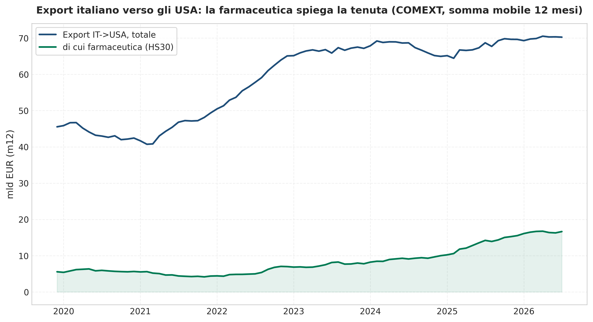
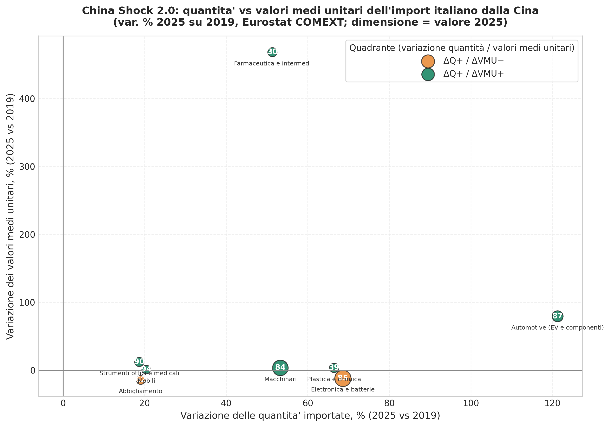
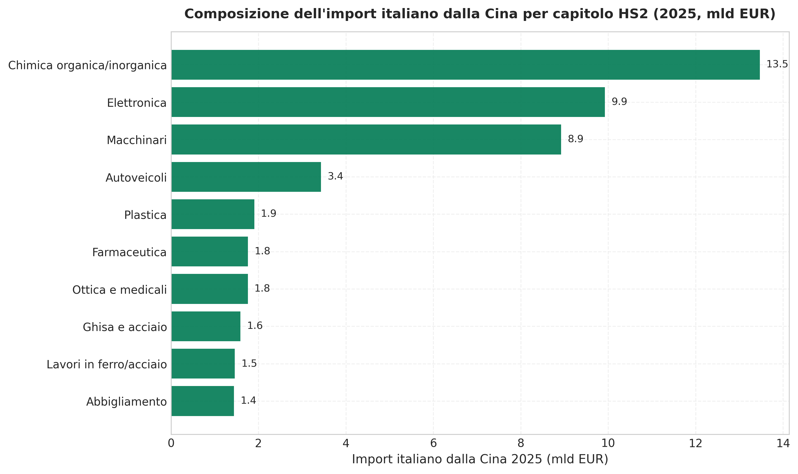
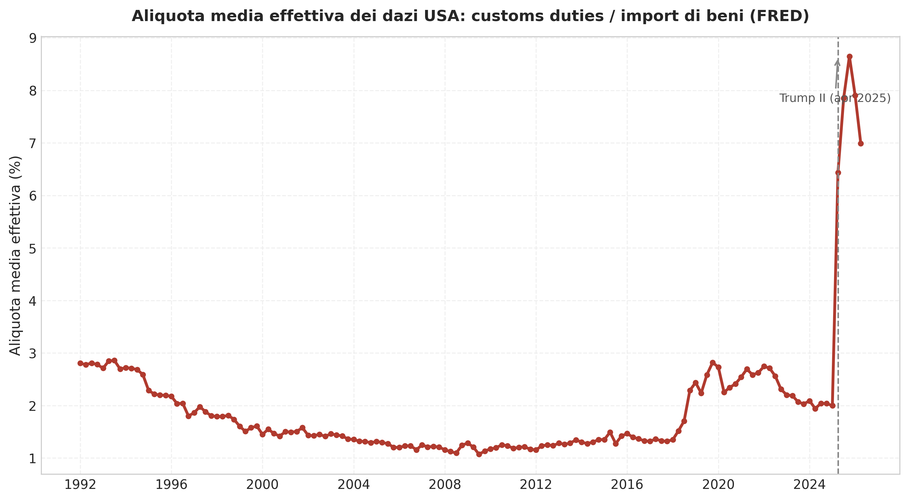
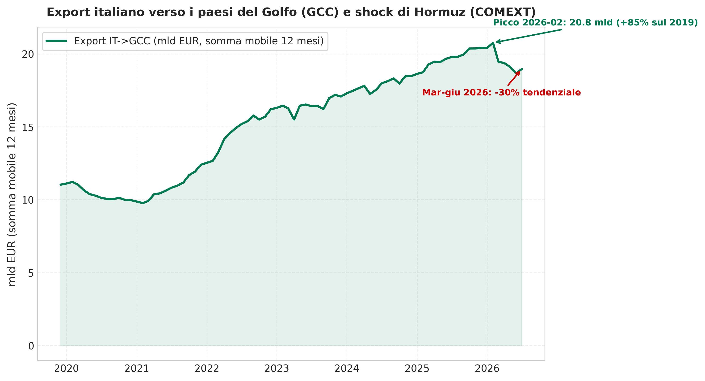

Export italiano tra fratture e nuove rotte
Lettura del Rapporto di Geoeconomia 2026: mercati, dipendenze e nuove rotte
Paolo Volterra ![]()
Il commercio mondiale cresce ancora, ma lungo traiettorie divergenti: l’Asia concentra la domanda, l’Europa resta ferma e gli Stati Uniti assorbono una quota crescente della domanda finale. In questo quadro il Rapporto di Geoeconomia del Centro Studi Confindustria colloca l’export italiano tra due spinte opposte: un’espansione verso gli Stati Uniti che dipende in misura decisiva dal farmaceutico, e una penetrazione cinese che si sposta dai beni a basso costo verso componenti tecnologiche e prodotti green. Il documento ricostruisce le tre divergenze del Rapporto, il posizionamento italiano, il caso dei dazi statunitensi, le dipendenze critiche e le nuove rotte commerciali, riproducendo su fonti ufficiali le evidenze quantitative disponibili.
export italiano, geoeconomia, dazi, dipendenze strategiche, China shock, commercio estero
1 Un commercio mondiale senza paradigma
Tra il 2024 e la metà del 2026 il commercio mondiale di merci è cresciuto di circa il 9 per cento in volume, un ritmo superiore a quello della produzione industriale. La crescita, però, non è distribuita: circa nove decimi della crescita dell’export mondiale e oltre tre quarti di quella dell’import provengono dall’Asia, mentre l’Europa resta sostanzialmente stagnante e gli Stati Uniti continuano ad assorbire la domanda finale mondiale [1]. Considerando gli scambi mondiali di beni al netto del commercio interno all’Unione europea, la Cina consolida la prima posizione come esportatore, con una quota salita al 17,5 per cento nel 2025, e gli Stati Uniti restano il primo importatore, con il 15,9 per cento degli acquisti mondiali [1].
A questa divergenza geografica se ne affiancano altre due. Sul piano tecnologico, il commercio mondiale è per circa tre quarti composto da beni intermedi e strumentali, e la filiera delle tecnologie dell’informazione e della comunicazione ne è il motore principale; sul piano dei servizi, gli scambi hanno superato i 9.000 miliardi di dollari nel 2025, con un peso rilevante delle tecnologie digitali e della proprietà intellettuale [1]. Sul piano geopolitico, la distanza politica tra Stati Uniti ed Europa è salita fino a livelli comparabili a quelli del confronto tra Stati Uniti e Cina, misurata dall’indice di rischio geopolitico costruito sulla stampa internazionale [1].
2 Gli Stati Uniti e la composizione dell’export italiano
Per l’Italia gli Stati Uniti rappresentano il principale mercato di sbocco extra-europeo, con una quota dell’export salita al 10,8 per cento nel 2025, in aumento di 1,3 punti sul 2019. Il dato aggregato, però, nasconde una composizione squilibrata: la crescita del 2025 rispetto al 2024 è dovuta in larga parte al settore farmaceutico, rimasto in larga misura indenne dai dazi statunitensi, mentre i comparti manifatturieri esposti all’inasprimento tariffario hanno registrato contrazioni. Il peso del farmaceutico sull’export italiano verso gli Stati Uniti, calcolato sui flussi di merci più recenti, è pari a circa il 24 per cento del totale (Figura 1). Si tratta di una concentrazione che rende la tenuta del canale nordamericano dipendente da un settore relativamente protetto e da un quadro regolatorio che può cambiare.

Figura 1: Export italiano verso gli Stati Uniti, totale e farmaceutico. Elaborazione su dati Eurostat Comext; somma mobile a dodici mesi, miliardi di euro. Il peso del farmaceutico citato nel testo è calcolato sugli ultimi dodici mesi disponibili.
3 Il China shock 2.0
Il secondo fronte è la Cina, principale mercato di fornitura extra-europeo, con una quota dell’import italiano salita al 10,2 per cento nel 2025. La novità rispetto al primo shock degli anni duemila non è la pressione sui prezzi, ma la salita lungo la catena del valore: la Cina mantiene la leadership nei comparti maturi e la estende ai prodotti avanzati e verdi, dai veicoli elettrici alle batterie, dal fotovoltaico all’hardware digitale e alla farmaceutica [1]. La composizione dell’import italiano dalla Cina è pari a circa 61 miliardi di euro nel 2025, con i capitoli della chimica, dell’elettronica e dei macchinari in testa (Figura 3) [2]. Il valore non coincide con i circa 53 miliardi citati dal Rapporto: le due fonti coprono un perimetro merceologico e criteri di aggregazione non identici e lo scarto (circa 8 miliardi, 13 per cento) non è qui ricondotto a una causa univoca.
La distinzione tra pressione di prezzo e competizione di qualità si legge scomponendo la variazione delle quantità e dei valori medi unitari, ma con cautela: il valore medio unitario non è una misura pura né del prezzo né della qualità, perché riflette anche cambiamenti di composizione interna alla singola voce doganale. La farmaceutica e i macchinari mostrano quantità e valori medi unitari in aumento, coerenti con un posizionamento su fasce più alte. Nell’automotive l’aumento del valore medio unitario è in larga parte un effetto di composizione — il paniere importato si è spostato da parti e componenti verso veicoli elettrici finiti, a più alto valore per chilogrammo — e non contraddice la lettura del Rapporto, che per gli autoveicoli cinesi parla di prezzi aggressivi. Nell’elettronica le quantità crescono mentre i valori medi unitari diminuiscono, segno di una competizione ancora guidata dal prezzo (Figura 2). Il quadro non è uniforme e non autorizza una lettura univoca: la sola leva del costo non descrive più la penetrazione cinese, ma non è nemmeno scomparsa.

Figura 2: China shock 2.0: variazione delle quantità e dei valori medi unitari dell’import italiano dalla Cina tra il 2019 e il 2025. Elaborazione su dati Eurostat Comext; la dimensione dei punti è proporzionale al valore importato nel 2025. I quadranti sono descrittivi (segno delle due variazioni) e non implicano di per sé un giudizio su prezzo o qualità.

Figura 3: Composizione dell’import italiano dalla Cina per capitolo merceologico, 2025 (primi dieci capitoli HS2; il totale è di circa 61 miliardi). Elaborazione su dati Eurostat Comext; miliardi di euro.
4 Le dipendenze critiche
Il Rapporto identifica le dipendenze critiche con una metodologia propria del Centro Studi, condotta su dati BACI-CEPII: un prodotto è critico quando la fornitura extra-europea è molto concentrata e difficilmente sostituibile con produzione nazionale o europea, condizione approssimata dall’export italiano e dagli scambi intra-UE, e presenta un saldo commerciale marcatamente negativo. L’analisi si concentra su materie prime, energia e beni intermedi e di investimento, escludendo i beni di consumo [1]. Le dipendenze italiane risultano polarizzate: gli Stati Uniti sono il primo partner per valore, con circa il 24 per cento, trainato dal farmaceutico; la Cina è il primo per numerosità, con circa il 27 per cento, nei comparti dell’elettronica e dell’elettrificazione.
Il Rapporto dedica un approfondimento, curato dall’Istat, alle imprese che importano i prodotti strategici e difficilmente sostituibili. Sono 317 le voci della Nomenclatura combinata classificate come strategiche — una tassonomia empirica costruita sul perimetro delle tecnologie della piattaforma europea STEP, con il contributo del quadro sulle materie prime critiche e sulle tecnologie a zero emissioni, non un allegato normativo [3], [4], [5] — di cui 36 considerate contemporaneamente strategiche, scarse e di difficile sostituzione tecnologica a breve termine [6]. Queste ultime sono importate da 401 imprese, lo 0,01 per cento del totale, che occupano circa 148.000 addetti, realizzano un valore aggiunto medio per addetto più che doppio rispetto al resto del sistema (136.246 euro contro 57.834), presentano una propensione all’export quasi tripla rispetto alla media e registrano un indice di rilevanza sistemica (IRIS) di 7,2, contro valori prossimi a zero per le altre imprese [1]. La medesima metodologia, presentata da Istat nel marzo 2026, individua 38 prodotti e 583 imprese: le differenze verosimilmente riflettono vintage e filtri microeconomici del dataset d’impresa, non dati in contraddizione [7], [8].
La composizione settoriale di queste importazioni è peculiare rispetto alle altre principali economie europee: petrolchimica ed energie alternative pesano per circa il 64 per cento in Italia. La ricostruzione sui flussi di importazione conferma il dato: nei tre anni 2023-2025 la somma delle due classi è pari al 64,1 per cento dell’import strategico italiano (quota sul valore cumulato), con il gas naturale e l’elettricità a costituire oltre tre quarti della sola classe energetica [2].
5 L’inasprimento tariffario degli Stati Uniti
La seconda amministrazione Trump ha portato l’aliquota media applicata alla dogana dei dazi statunitensi da circa il 2,6 per cento alla fine del 2019 a circa il 9,6 per cento alla fine del 2025, con un trasferimento quasi integrale dell’onere sugli importatori americani [1]. Una misura diversa, ricostruibile dalle statistiche ufficiali statunitensi, è il rapporto tra i dazi doganali riscossi e il valore complessivo delle importazioni di beni, che passa da poco meno del 3 per cento nel quarto trimestre 2019 a circa l’8,6 per cento nel quarto trimestre 2025 (Figura 4) [9]: è un onere medio sull’intero import, diluito dai beni esenti, quindi inferiore all’aliquota applicata. Un tratto distintivo della seconda presidenza Trump è il divario tra le aliquote annunciate e quelle effettivamente riscosse alla dogana, per effetto di esenzioni, accordi parziali e pronunce giudiziarie: è il motivo per cui il livello dichiarato resta più alto di quello effettivo [1]. Il dettaglio settoriale dell’esposizione italiana e la stima del pass-through richiedono invece microdati doganali e i modelli econometrici richiamati dal Rapporto, e non sono ricostruiti in questa sede.

Figura 4: Dazi statunitensi: rapporto tra dazi doganali riscossi e importazioni di beni (proxy dell’autore, distinto dall’aliquota media applicata del Rapporto). Elaborazione su serie FRED B235RC1Q027SBEA e BOPTIMP; valori trimestrali, per cento.
6 Nuove rotte e colli di bottiglia marittimi
L’Unione europea è il primo attore mondiale per numero di accordi commerciali preferenziali, con 47 accordi. Il Rapporto guarda in particolare a due direttrici: l’accordo con il Mercosur, entrato in applicazione provvisoria il 1º maggio 2026, e l’India, con i negoziati conclusi a gennaio 2026. Il Mercosur offre opportunità alla meccanica, alla chimica, alla farmaceutica e alla metallurgia italiana; nei primi due mesi di applicazione (maggio-giugno 2026) l’export italiano verso l’area è cresciuto del 12,9 per cento, più del doppio della media extra-europea, e a regime l’abbattimento dei dazi varrà per l’Italia un beneficio pari al 10,6 per cento del valore esportato, superiore a quello stimato per la Germania e per la media dell’Unione [1]. Accanto alla diversificazione, il Rapporto documenta la fragilità delle rotte: dopo una crescita del 76 per cento delle vendite italiane verso i paesi del Golfo tra il 2019 e il 2025, la chiusura dello Stretto di Hormuz conseguente al conflitto tra Stati Uniti e Iran ha provocato un crollo immediato.
La ricostruzione sui flussi di merci conferma l’entità dello shock. Considerando i sei paesi del Consiglio di cooperazione del Golfo, l’export italiano è cresciuto dell’85 per cento tra il 2019 e il 2025 e ha poi perso il 30 per cento nel confronto tra il quadrimestre marzo-giugno 2026 e lo stesso periodo del 2025 (Figura 5) [2]. La differenza rispetto alla variazione del 76 per cento indicata dal Rapporto dipende dal perimetro: il Rapporto aggrega otto paesi (i sei del Golfo più Iran e Iraq), mentre qui ci si limita ai sei del Consiglio di cooperazione. La contrazione del 2026 coincide, al netto dell’arrotondamento, con quella riportata nel Rapporto.

Figura 5: Export italiano verso i paesi del Golfo (GCC-6): somma mobile a dodici mesi, miliardi di euro. Elaborazione su dati Eurostat Comext. La serie a dodici mesi attenua visivamente lo shock: la variazione del −30 per cento richiamata nel testo è un confronto tra il quadrimestre marzo-giugno 2026 e lo stesso periodo del 2025, non un livello della curva.
7 Conclusioni
Il Rapporto descrive un export italiano la cui vulnerabilità è selettiva. La tenuta verso gli Stati Uniti poggia su un settore, il farmaceutico, che oggi è protetto e domani potrebbe non esserlo; la pressione cinese si sposta verso prodotti a maggiore contenuto tecnologico; le dipendenze critiche sono concentrate in poche imprese e in pochi comparti; le rotte verso il Golfo mostrano quanto rapidamente un vantaggio commerciale possa essere eroso da un evento geopolitico. Ne emerge un’agenda in cui la diversificazione dei mercati e la gestione delle dipendenze contano quanto la competitività di prezzo, e in cui la capacità di adattamento delle imprese più esposte diventa un elemento di politica industriale.
Nota metodologica
Questo documento nasce dall’interazione di tre componenti. L’autore definisce le domande, esercita il giudizio critico e assume la responsabilità scientifica ed editoriale del risultato. Strumenti di intelligenza artificiale generativa sono impiegati a supporto della ricerca bibliografica, della lettura, della sintesi, della riorganizzazione argomentativa e della revisione del testo. Un’infrastruttura open source sviluppata dall’autore automatizza il reperimento, l’armonizzazione e il controllo dei dati dalle fonti statistiche ufficiali, e mantiene l’elaborazione documentata e riproducibile.
Le fonti sono pubblicamente accessibili e citate con la loro denominazione ufficiale; le elaborazioni originali presentate nelle figure sono auditabili e riproducibili da terzi a partire da esse, nei limiti delle revisioni e della disponibilità delle fonti. I richiami a risultati del Rapporto basati su microdati d’impresa non pubblici non sono invece replicabili dall’esterno. Le tabelle e i grafici sono elaborazioni dell’autore: calcoli, aggregazioni, trasformazioni e scelte di rappresentazione sono attribuibili all’autore e non agli enti produttori dei dati.
La responsabilità per le fonti utilizzate, le analisi condotte, le elaborazioni effettuate, le interpretazioni proposte e le conclusioni formulate resta interamente in capo all’autore. L’intelligenza artificiale è stata impiegata come ambiente di supporto cognitivo ed editoriale, non come fonte primaria, autore autonomo o sostituto del giudizio critico.